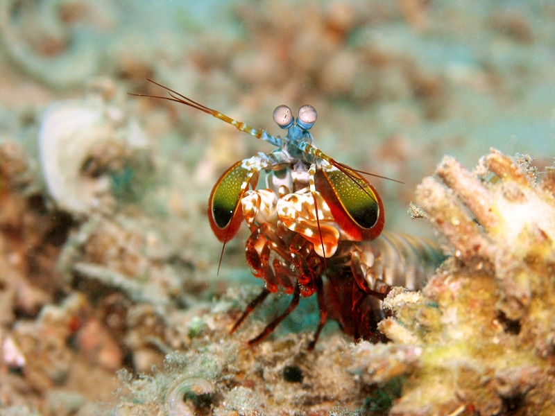

Fatos sobre o Stomatopoda
Stomatopoda (ou estomatópode), chamados popularmente de tamarutacas ou de lacraias-do-mar no Brasil, é uma ordem de crustáceos marinhos da subclasse Hoplocarida, que agrupa cerca de 400 espécies, caracterizadas principalmente pela morfologia da segunda pata torácica, que é modificada em apêndice subquelado, lembrando uma pata de louva-a-deus.
Os estomatópodes são predadores ativos que caçam presas com o auxílio de um sentido de visão muito apurado e capaz de interpretar polarização no espectro ultravioleta e infravermelho.
Estomatópodes podem ser encontrados em quase todo o litoral brasileiro, mas não são animais fáceis de se observar pelos seus hábitos mais furtivos. Devem ser manuseados com muita cautela pois são animais preparados para se defender com força, caso sejam incomodados.